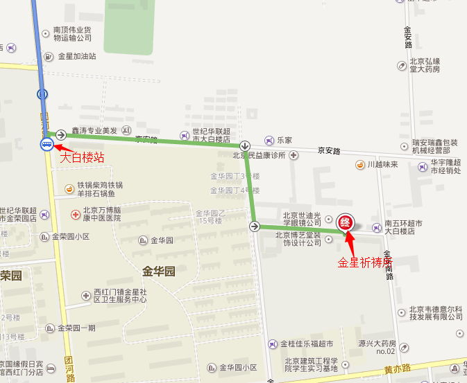

父亲给他说：孩子！你常同我在一起，凡我所有的，都是你的；只因为你这个弟弟死而复生，失而复得，应当欢宴喜乐
路加福音 15:31-32
南堂慕道中心主内青年团
2014.08.30~2014.08.31
亲爱的小伙伴儿们：
在这炎炎夏日，是否感觉被忙碌的生活和工作压的喘不过气？是否很久没有回归自己，聆听内心的声音？是否很久没有和朋友们一起欢乐？是否渴望重获来自天父的那份爱、希望和力量？那快来参加“回归主爱周末生活营”吧！
2014年8月30日至31日，南堂慕道中心“主内青年团”将在北京市大兴区金星祈祷所举办为期两天的“回归主爱”周末生活营。来自马来西亚Fondacio团体的四位老师将带领大家回归自我，体会生命的意义；通过身体工作坊、泰泽祈祷、摇篮体验等多样化的祈祷方式，使大家与天主有一次“亲密接触”，切身体验到天主的爱，拉近我们和天主的距离。旨在让我们的信仰得到升华, 认识更多主内的好朋友，更新自己的灵性生命。
活动主题:《回归主爱》
起止时间：2014年8月30日--8月31日（两天一晚）
活动地点：金星祈祷所
预计费用：150元（含：住宿一晚、五餐及其它费用，多退少补）
报名方式：
1、点击下面的报名链接，按提示填写相关信息。
2、电话或短信确认报名信息
联系人：13810320056 （张丽娜）
报名链接：http://www.wenjuan.com/s/ZrY7fu
截止日期：2014年8月27日
温馨提示：带身份证（入住酒店用）；自带水杯、纸笔；穿着舒适的衣服、鞋（女生勿穿高跟鞋和裙子）；可自备洗漱用品
集合时间及地点：2014年08月30日上午7:30 在四号线新宫站A口集合，联系人：15001287818（高利旺）；15110260323（张建锋）
（友情提示：时间紧凑，人员较多，请大家一定不要迟到！）
乘车方式：新宫地铁A口出，出口旁边坐369路或954路，到大白楼下车。另地铁口附近有摆渡车，也可到大白楼下车（迟到的同学可能需要按此乘车方式到大白楼，到达后可电话联系上述的服务人员。）



我从小领洗，但一直在寻求可以安静的体会与天主间的关系，这个愿景在这次活动中得到了满足。破冰游戏热闹，有趣但不会感到喧哗。相互对视环节，一开始我觉得很尴尬，但真的进入状态后才感觉到这是多么的美妙。“盲人舞蹈”是一个很耐人寻味的活动，就像生活的缩影一样，在盲目无助时会感到担心害怕，在自己认为聪明的想到一些捷径时却发现有很多和自己一样的聪明人已挤满了那条捷径，在有肩膀可以依靠时心里是那样的踏实，平安，当肩负一份信任时心里的责任感又是那样的强烈。这让我们做为自己的旁观者很清楚的认识到了在不同情况下的不同表现，我觉得我会一直用这样的方法去调节自己的生活。 “摇篮”是一个几乎人人都喜欢的环节，当我躺在“摇篮”里的一霎那，我的心，我的身全部都融化了，只有我的灵躺在那里，像似我已经死去，被天主的天使护拥着在去往天国的路上，一个声音响起：“我在这里，一直伴随着你，你是那样的坚强，是那样的令我满意，你的聪明，你的智慧都是我赐予你的礼物…”这一切都是那么的真实，我用心在听着天主一句一句对我的肯定，这如果是真的最终审判该是多好！醒来后，睁开眼，我很失望又回到了现实里，但我感受到了那样的经验，如果真的有一天，天主的声音再次响起，对我还是这样的肯定，那么，我的主，我愿意用一生的努力来赢取。两天的时间稍瞬即逝，大家都意犹未尽的分享着这两天里的点点滴滴，我很充实也很满足，期待着以后还可以有这样让漂泊的心能停靠的港湾，再次与大家一起被天主的爱娇惯着、充实着，把我们所感受到的辐射给更多的人。
这次活动好像饱含了一种魅力，令我心生向往，心中充满喜悦！破冰游戏开始：一块布遮开了彼此，一落布，一张笑脸……我好喜欢那种感觉，仿佛回到了青春。一张纸，写下你的期望和心态，很欣赏这种直入主题，抓住本质的环节。盲人舞蹈：用两层口罩遮住最明亮的眼睛，当下立即一片黑暗！40多个人遮蔽眼睛，在教室里走，四周围是摞起来的坚硬的课桌，前后都有坚硬的物品，即使不和人相撞，和物相撞，后来反省，为什么没有想到天主？没有让天主进入我的生命？基督徒的喜乐来自哪里？就是把一切交给天主，完全信赖！你既然相信他的存在，你既然知道他是爱你的天主。摇篮：第一次经历，被8，9个人抱起来的感觉，轻轻的闭着眼睛，在这充满爱的摇篮里，摇呀，摇呀……，我内心充满感动！当看着他、她安详的躺在摇篮里的时候，我能体会到他们的满足。原来这世界上使人能够“满足”的，不是名誉，不是地位，不是金钱，也不是学位……而是一份单纯的爱！三人代祷：第一次把别人的需要视为自己的需要一样，去祈求天主，第一次真真切切的体会到，爱人如己！原来天堂就是爱的分享，给予爱，接受爱……感谢天主！
来到活动地点，第一眼便搜索到了几个很久没有联系，她们存在让我的心立刻安顿了下来，我认真的开始参与活动。第一个游戏是朋友间的对视，我们怀着真挚和纯净的爱，互相倾诉并聆听着对方的心语；闭上眼睛，在无光的状态下，触摸着朋友的面颊、五官，将来自天主的爱传递给朋友；角色是互换的，同样我也感受到天主藉着姊妹的手传递了他的爱。我很想哭，拼命忍住了。“盲人跳舞”的游戏，由起初一个人的彷徨、戒备，到扶到前面带领人的肩膀时的踏实，再到后面成员的连接，我心底发出一个声音：有团体真好；我们的步子由凌乱、生硬，到后面的和谐，让我认识到人们在合作中需要互相体谅、包容，为对方着想，揭下眼罩，所有人已围绕成一个完整的圈。让我收获最大的游戏还属“摇篮游戏”，小小领队的话语竟然真的触动了我（她后来说自己完全不记得自己在说什么），我止不住眼泪……我了解到他是如此的爱我，在我孤单无助的时候，他一直张开臂膀等待着我去休憩；无论我认为自己现在的生活有多么的不理想，他却是一直的宽容谅解，对我充满认可和希望，这让我感觉到惭愧，我想我一定会一点一点站起来，重新审视他所赐予我的宝贵财富（信仰、家人、朋友、工作、团体……）。
这次活动收获远超过了我的预期，同时也将我从低谷将我拽到了山腰，让我看到了翠绿的希望，找回了前进的方向。对于接下来的生活，我会认真分辨哪些是他所更加愿意的，争取安排好生活表，保证那些重要的事情，减少惰性、任性和自私，更好的去生活。衷心感谢这次避静，感谢所有为此付出的人们，感谢我们的好天主。希望更多的朋友可以参与到这样的活动中，经验天主的爱，更好的度人生。
一次很真实的自我面对
一次很真实的与己相处
一次很真实的信仰感受
我用主赐予我的手来数算我人生的意义及我成功人生的意义，我人生的遗憾，我生命的理想，我生活的座右铭；我用主赐予我的眼睛与最亲密的朋友对视，寻找那个朋友眼中的我，寻找那个我眼中的真我，一次感觉到自己如此有力的向他人说出“我爱你”，也向同一个人说出“对不起”的经验历程在这里诞生；我用主赐于我的心躺在祂赐于我的摇篮里感受我生命中与主在一起的点点滴滴，感受信仰带给我的与众不同的生活里程碑；在现实的世界生活里我们应该在独处与安静中寻找主，我相信靠那赐予我力量的基督，我凡事都可以做。最后我要感谢主内青年团团体提供的短暂却精彩的两天避静生活，感谢讲课老师带来的充满恩宠的课程，感谢天主让我在你内静静的聆听。